Phỏng vấn & Case Studies
Bài tổng hợp: quy trình 7 bước để giải một câu hỏi system design, rồi áp dụng vào 5 case study kinh điển — URL Shortener, WhatsApp, Twitter, Netflix, Uber.
Câu hỏi system design cố tình mơ hồ, không có đáp án đúng duy nhất. Mấu chốt là đối thoại hai chiều với người phỏng vấn — thể hiện tư duy trade-offs.
Quy trình 7 bước
- Làm rõ yêu cầu (Requirements) — chia 3 nhóm: Functional (tính năng cốt lõi), Non-functional (latency, availability, scalability...), Extended ("nice to have": analytics, monitoring).
- Ước lượng & ràng buộc (Estimation) — quy mô? tỉ lệ đọc/ghi? requests/giây? dung lượng lưu trữ?
- Thiết kế data model — định nghĩa entity & quan hệ; bao nhiêu bảng? SQL hay NoSQL?
- Thiết kế API — interface đơn giản (tham số, hàm), không cần code. Vd
createUser(name, email): User. - Thiết kế tổng thể (High-Level) — xác định component (Load Balancer, API Gateway...); monolith hay microservices? loại database?
- Thiết kế chi tiết (Detailed) — đi sâu component chính; nêu nhiều phương án + ưu/nhược. Partition data? cache? xử lý traffic spike?
- Tìm & xử lý bottleneck — đủ replica? có SPOF? cần sharding? cải thiện độ bền cache?
Đọc engineering blog của công ty bạn phỏng vấn để biết tech stack & ưu tiên của họ. Đừng giáo điều ("NoSQL luôn tốt hơn" gây ấn tượng xấu) — luôn lập luận theo trade-offs.
Case Study 1 — URL Shortener
Tạo alias ngắn cho URL dài (như Bitly, TinyURL). Yêu cầu: sinh alias ngắn duy nhất; redirect; link hết hạn sau một thời gian. Non-functional: HA, latency thấp, scale.
Ước lượng: read-heavy, tỉ lệ đọc/ghi 100:1, 100M link/tháng → ~40 writes/s, ~4000 reads/s; lưu ~6 TB cho 10 năm.
Data model: dữ liệu ít quan hệ → ưu tiên NoSQL. Bảng users & urls (hash, originalURL, expiration, userID — index cột hash).
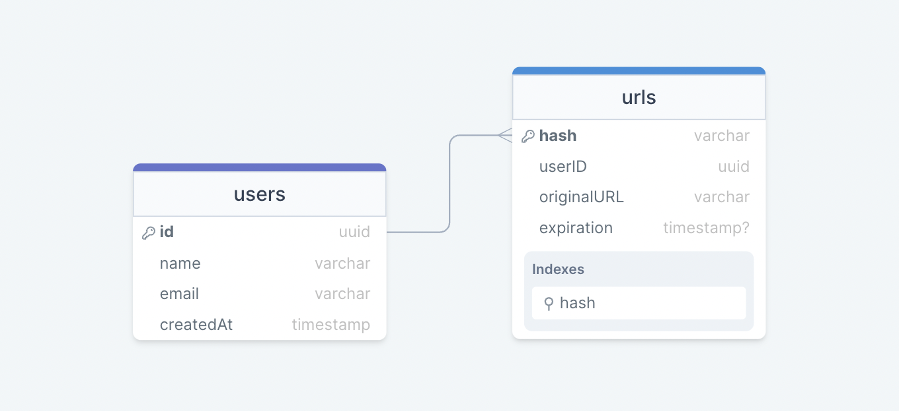
Base62 (A-Z, a-z, 0-9): với 7 ký tự → 62⁷ ≈ 3.5 nghìn tỉ URL — đơn giản nhưng không chống trùng. MD5: băm rồi lấy 7 ký tự — có rủi ro trùng. Counter + Zookeeper: mỗi server được Zookeeper cấp một khoảng counter riêng → đảm bảo không trùng & không có SPOF. Tốt nhất là một Key Generation Service (KGS) sinh sẵn key.
Luồng tạo: API server xin key từ KGS → ghi DB + cache → trả HTTP 201. Luồng truy cập: kiểm cache → miss thì lấy DB & trả HTTP 301 (redirect); không có thì HTTP 404. Dọn link hết hạn: active (cron) hoặc passive (lazy). Cache LRU. Partition bằng consistent hashing.
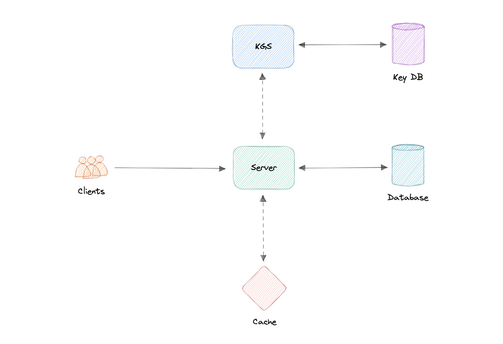
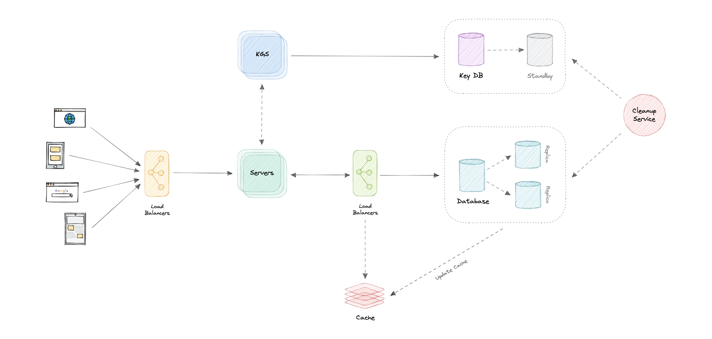
Case Study 2 — WhatsApp
Nhắn tin tức thời. Yêu cầu: chat 1-1; group (≤100 người); chia sẻ file; (mở rộng: sent/delivered/read receipt, last-seen, push notification).
Ước lượng: 50M DAU, ~40 message/user/ngày → 2 tỉ message/ngày, ~24K req/s; ~38 PB cho 10 năm (chủ yếu là media).
Kiến trúc microservices: User Service (HTTP, auth), Chat Service (WebSockets cho nhắn tin), Notification Service, Presence Service (last-seen), Media Service. Giao tiếp nội bộ: gRPC + service discovery.
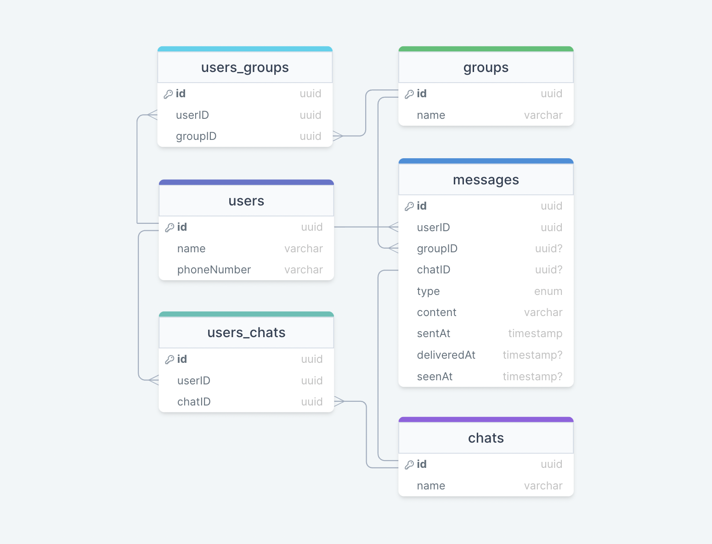
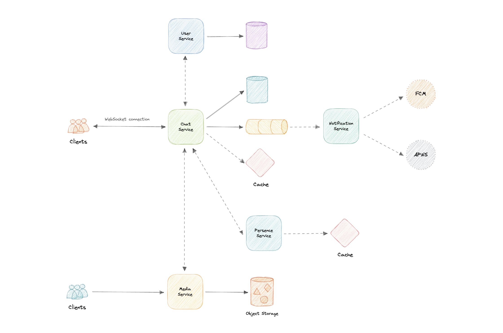
Real-time: chọn Push + WebSockets (full-duplex, latency thấp) thay vì pull/polling. Last-seen: cơ chế heartbeat lưu timestamp vào cache (Redis). Notification: nếu user offline → đẩy event vào message queue (SQS/RabbitMQ), Notification Service gửi tới FCM (Android) / APNS (iOS). Media: object storage (S3) + CDN. Dùng API Gateway hỗ trợ nhiều protocol (HTTP/WebSocket/TCP).
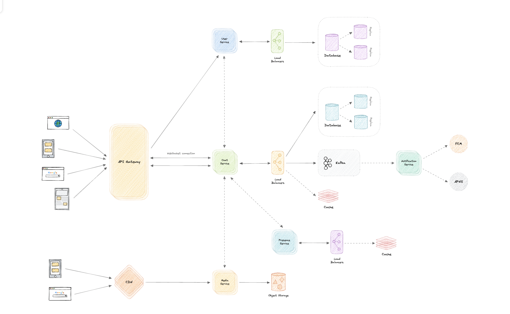
Case Study 3 — Twitter
Mạng xã hội với "tweet" ≤280 ký tự. Yêu cầu: đăng tweet; follow; newsfeed; search. Ước lượng: 200M DAU, 1 tỉ tweet/ngày, ~12K req/s; ~19 PB / 10 năm.
Pull (fan-out on load): dựng feed khi đọc — ít ghi nhưng có thể cũ. Push (fan-out on write): đẩy tweet vào feed mọi follower ngay — nhiều ghi. Hybrid: push cho user ít follower, pull cho "celebrity" nhiều follower. Ranking kiểu EdgeRank: Rank = Affinity × Weight × Decay (hiện đại dùng ML). Search/Trending: Elasticsearch (Apache Lucene); cache truy vấn/hashtag nóng. Notification qua Kafka. Mutual friends qua graph DB.
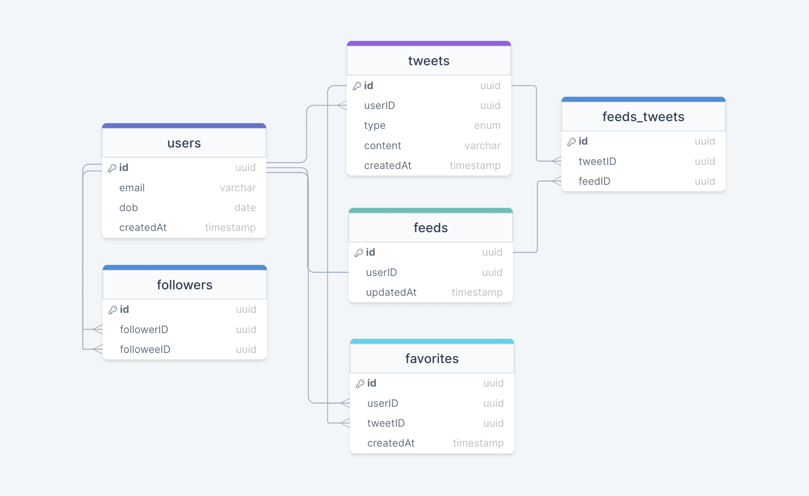
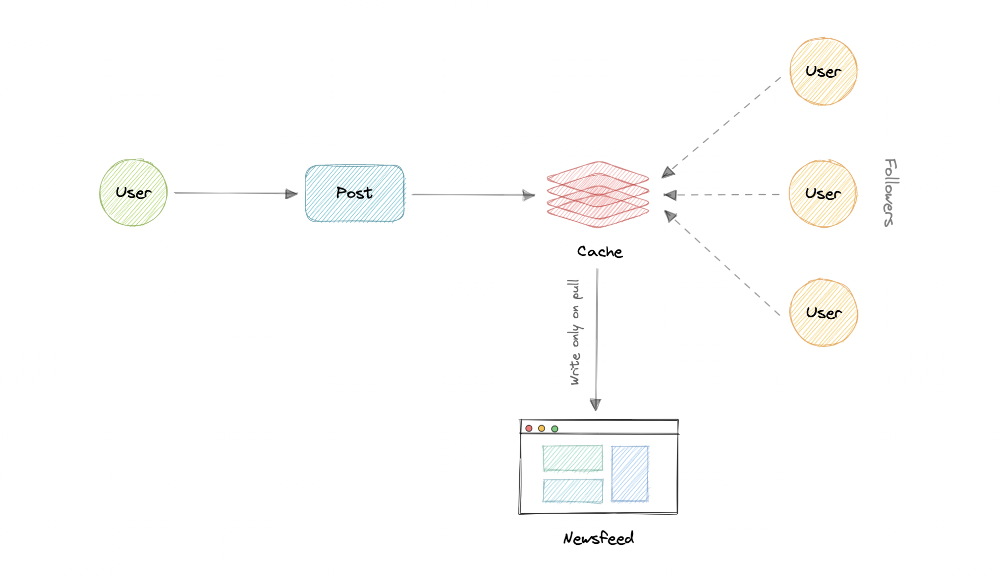
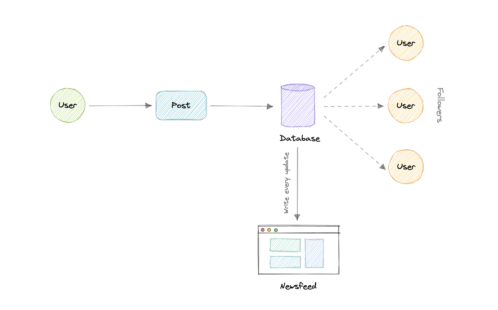
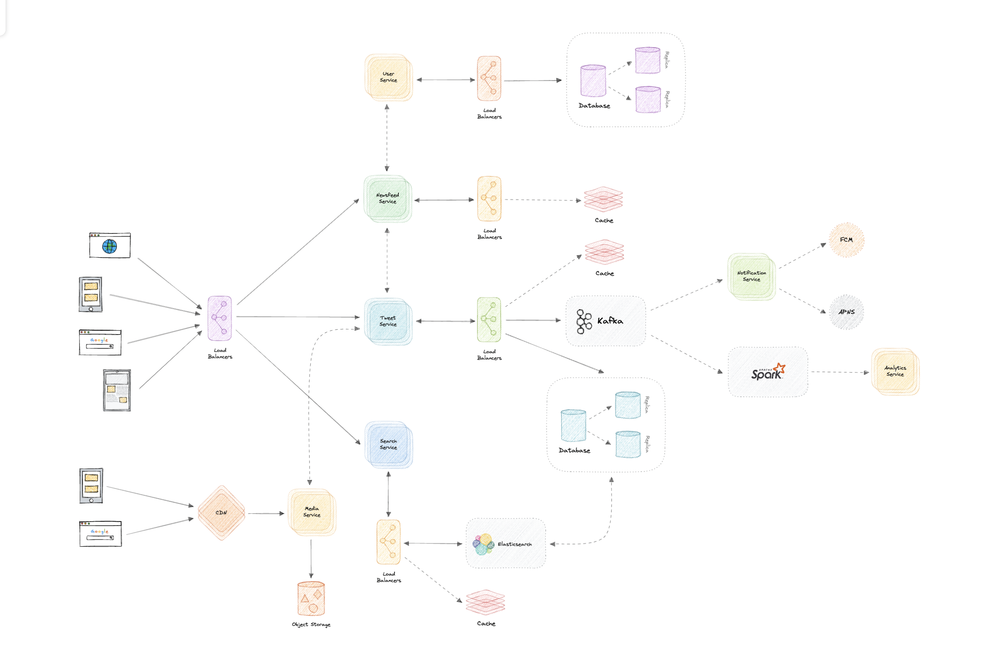
Case Study 4 — Netflix
Streaming video. Yêu cầu: stream & chia sẻ video; upload (content team); search; (resume playback, geo-blocking). Ước lượng: 200M DAU, đọc/ghi 200:1; ~500 TB/ngày; bandwidth ~5.8 GB/s.
Kích hoạt qua message queue (tách khỏi upload): File Chunker (Netflix chia theo cảnh/scene, không theo timestamp đều) → Content Filter (ML kiểm duyệt, lỗi đẩy DLQ) → Transcoder (FFmpeg / AWS MediaConvert) → Quality Conversion (4K/1440p/1080p/720p, lưu S3/HDFS). Streaming: CDN riêng Netflix Open Connect (đặt OCAs tại ISP, ~95% traffic qua kết nối trực tiếp) + adaptive bitrate (HLS). Resume: lưu offset trong bảng views. Recommendation: ML + Collaborative Filtering.
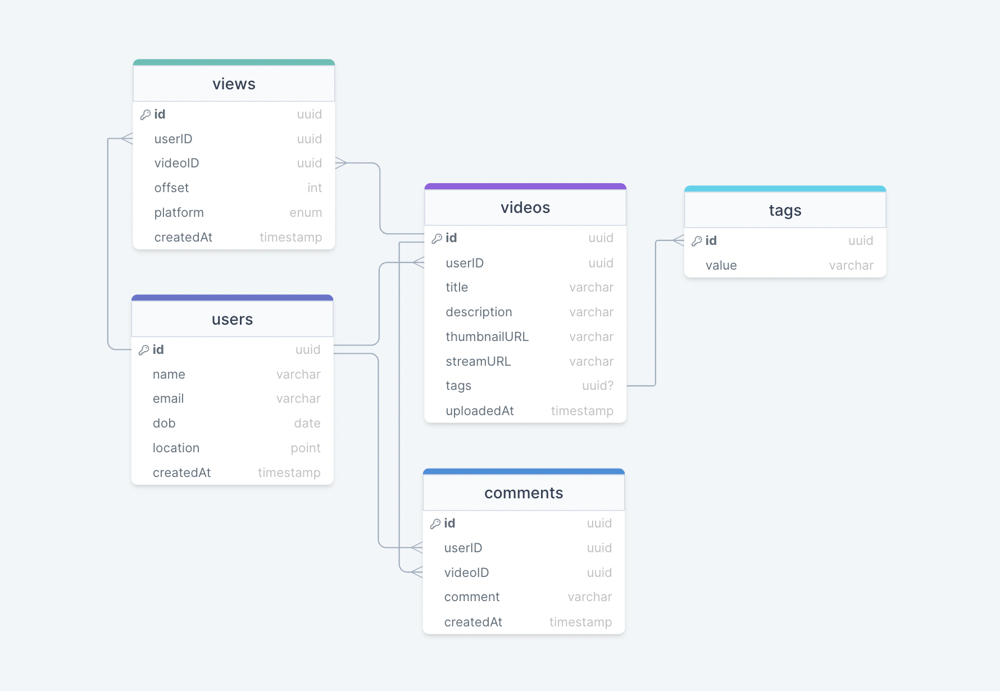
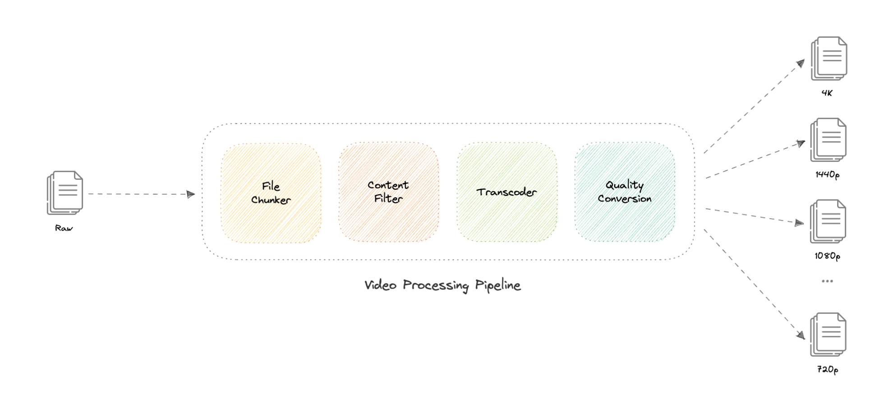
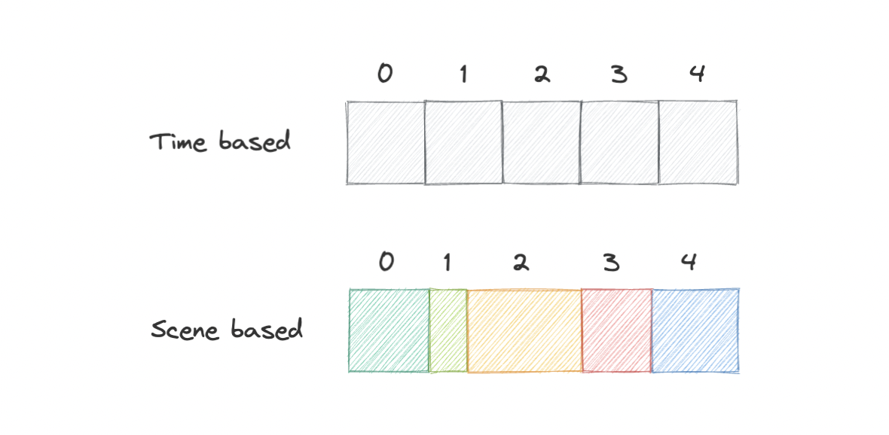
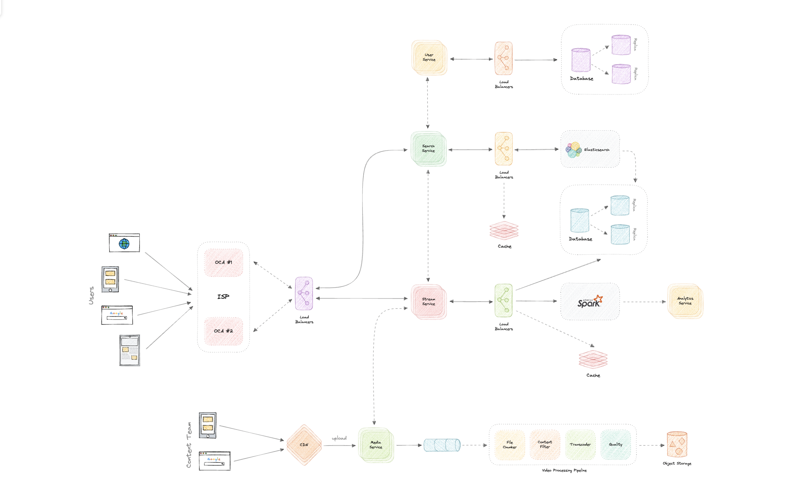
Case Study 5 — Uber
Đặt xe. Yêu cầu: khách thấy xe gần + ETA + giá, đặt xe, theo dõi vị trí tài xế; tài xế nhận/từ chối, đánh dấu hoàn thành. Ước lượng: 100M DAU, 1M tài xế, ~10M chuyến/ngày, ~12K req/s.
Theo dõi vị trí: Push + WebSockets (full-duplex). Khớp xe gần: SQL BETWEEN không scale → dùng Geohashing (so sánh geohash khách & tài xế) hoặc tốt nhất là Quadtrees (tìm kiếm vùng 2D hiệu quả, cache cập nhật mới nhất trong Redis). Race condition: bọc logic khớp chuyến trong Mutex, mọi thao tác transactional. High demand: Surge Pricing (giá động). Payments: bên thứ ba (Stripe/PayPal) + webhook. Partition theo region/zip code + consistent hashing.
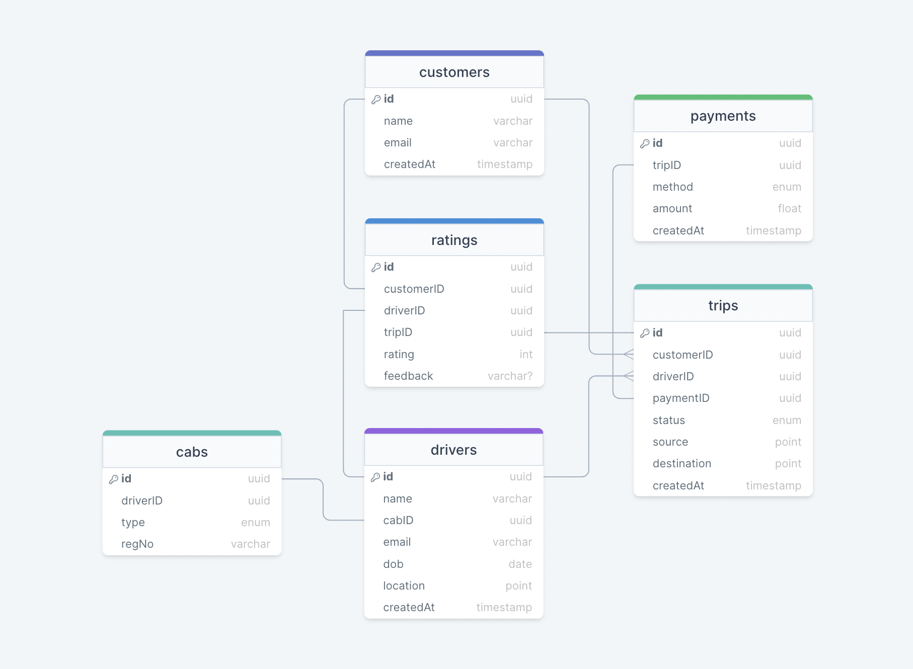
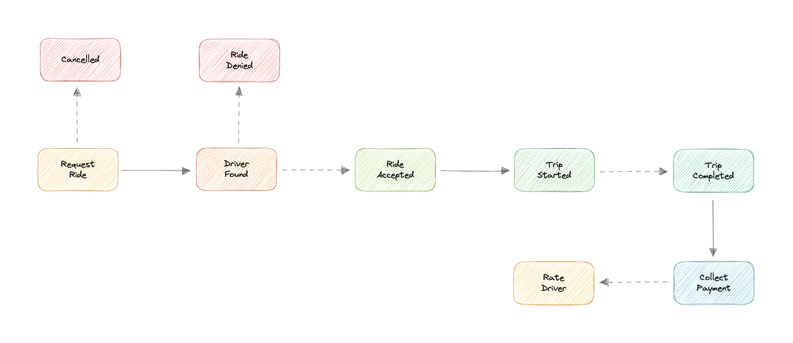
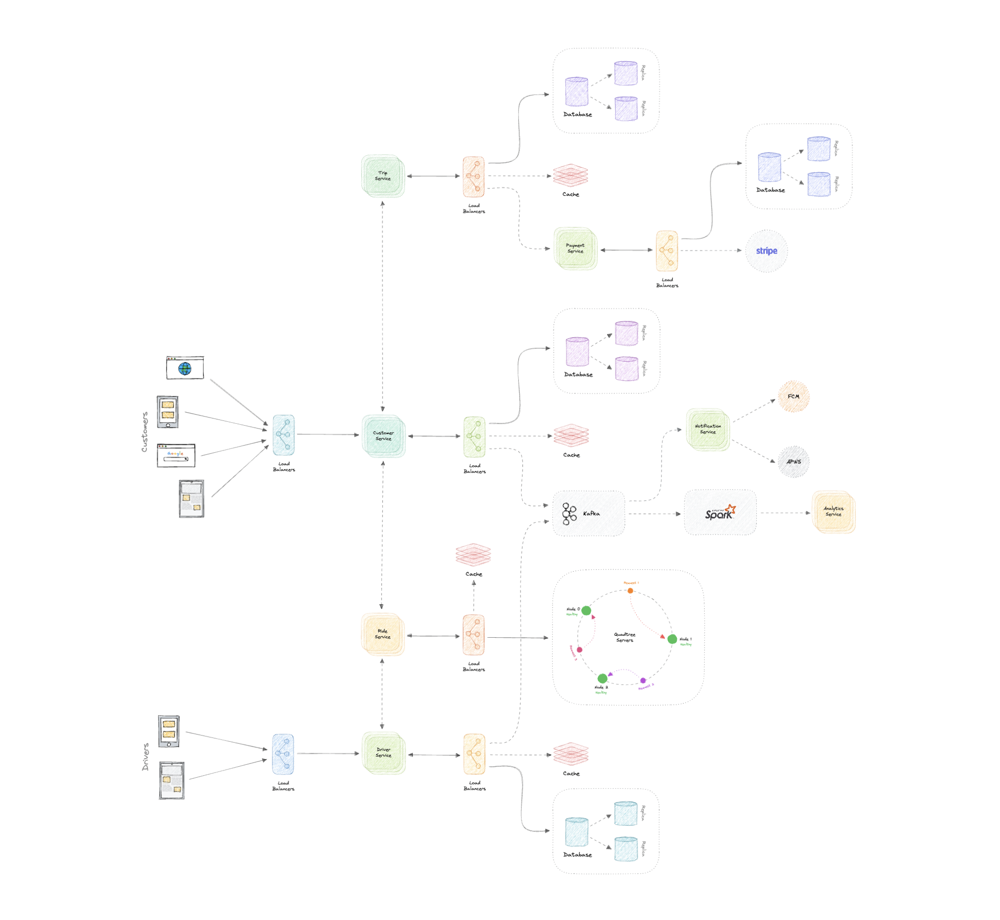
Hầu hết bài lớn đều theo cùng "công thức": microservices + API Gateway + sharding/consistent hashing + cache (LRU, 20% traffic) + message broker (Kafka/SQS) cho async + object storage + CDN cho media + nhiều instance/replica để chống SPOF. Nắm khung này, bạn giải được hầu hết câu hỏi.
🎉 Chúc mừng — bạn đã hoàn thành khóa học!
14 bài, từ networking cơ bản đến giải case study phỏng vấn. Bước tiếp theo:
- Tự thiết kế lại 5 case study trên giấy mà không nhìn đáp án — đây mới là cách học thật sự.
- Đọc repo gốc karanpratapsingh/system-design để xem các sơ đồ trực quan đi kèm từng chủ đề.
- Thử thiết kế thêm các hệ thống khác: Instagram, Dropbox, Ticketmaster, hệ thống chat, payment...